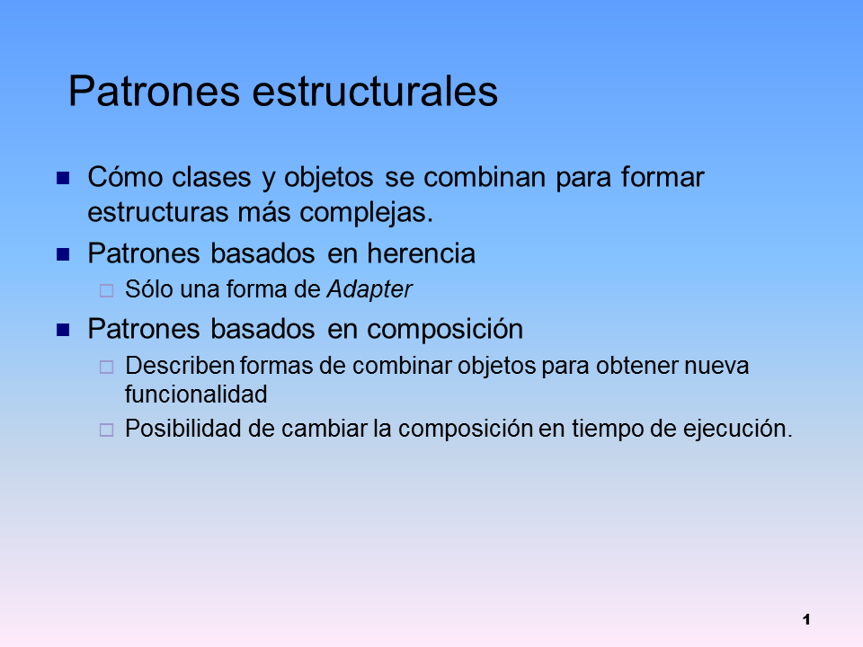

Lo que todo el mundo debería de saber sobre las metodologías agiles.
¿Que son las metodologías agiles? ¿Porque ahora en todos las empresas de
desarrollo implementan estos métodos? Descubre que son y empieces a aplicarlo de
manera correcta y funcional en tu trabajo.

Lo bueno de aprender analisis de requerimientos
Los requerimientos son características de un producto de software que se debe
satisfacer.
Un requerimiento puede ser desde una declaración abstracta de alto nivel de
una funcionalidad hasta una restricción de un sistema.

Tipos de arquitecturas de software
Al crear un software, no es necesario crear una arquitectura para cada sistema de
información. Lo natural es adoptar una arquitectura en función de sus ventajas e
incovenientes para cada caso.

Antipatrones, formas incorrectas de desarrollo de software
Los antipatrones son ejemplos bien documentados de malas soluciones en el
desarrollo de software. Aqui algunos anti patrones mencionadas, para evitarlos
a toda costa.

Tipos de patrones creacionales
Estos patrones te facilitan la tarea de creación de nuevos objetos, de una forma
que el proceso pueda ser desacoplado del resto del sistema.

Tipos de patrones estructurales
Estos patrones nos facilitan la modelización del software, especificando la forma
que los objetos se relacionan entre sí.

Tipos de patrones de comportamiento
Estos patrones se usan para gestionar la lógica, relaciones y responsabilidades
entre objetos.

¿Porqué son útiles los patrones de diseño?
Los patrones de diseño son de gran utilidad a la hora de desarrollar software, son
muy útiles por los siguiente motivos.